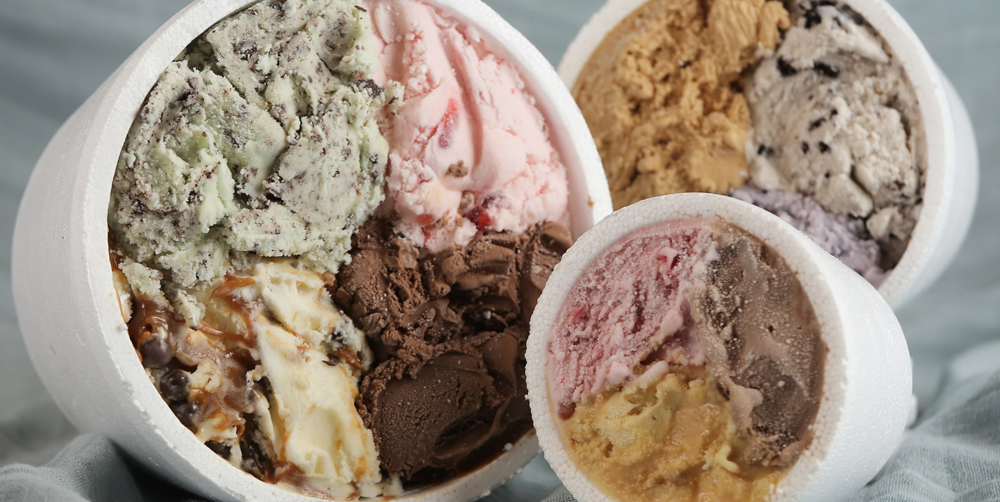
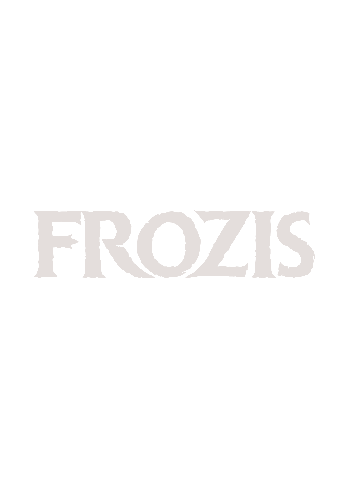

Conocénos
Frozis es la heladería de Lucio Best, mejor conocido como Frozono. Este es un superhéroe retirado, el mejor amigo de Bob Parr (Mr. Increíble), con quien hace heroicidades por la noche haciéndose llamar "Frozono" con su poder que le permite crear hielo con la punta de sus dedos, a partir de la humedad del ambiente. Su poder lo inspiró a abrir su propia heladería bajo el nombre de Frozis.
En Frozis podrán encontrar una variedad de gustos de helados, con íncreibles sabores, a los que no podrán resistirse

Lucio Best, alias "Frozono"

Helados Frozis